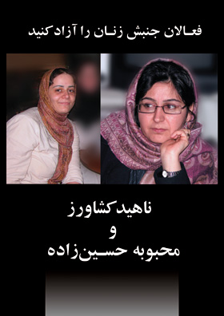

|
|
|
Browsing
Contact Us |
Campaigners |
Face to Face |
Tribune |
Interview |
News |
On the Web |
One Million |
Report
Farsi | Français | German | Italian | Spanish | العربية Also in this section
|
 Threats and Challenges Facing the Women’s MovementTranslated by Roja Fazaeli Wednesday 25 April 2007 On April 11, the Alumni Organization of Iran (Sazemane Danesh Amookhtegan Advare Tahkim Vahdat) held an public meeting with the intent of examining the Iranian women’s movement and protesting the continued detainment of members of the Campaign, Mahboubeh HosseinZadeh and Nahid Keshavarz. A report this meeting follows: On the April 2nd of this year two women’s rights activist were arrested while collecting signatures for the One Million Signatures Campaign to reform gender discriminatory laws. As of 11 April 2007 they are still being detained in Evin prison. In order to protest these unlawful arrests and to express concerns regarding the ongoing and increasing threats faced by the women’s movement a meeting was held at the Alumni Organization of Iran, on April 11th. One of the most moving and effective issues brought during this meeting up was Nahid Keshavarz and Mahboubeh HoseinhZadeh’s narrative from prison, which was read by Homa Madah and Nasim Sarabandi. These narratives are greatly indicative of their resistance and strength in the face of the immense pressures of prison and their protest to being illegally arrested and detained. However, an even more important message is echoed throughout this narrative. These two civil rights activists have depicted to us the bitter situation of female inmates. They have felt the heavy shadow of discriminatory laws on the lives of women prisoners. As Nahid wrote “The experience of prison has made me believe that the path we have chosen is the righteous one”. Or as Mahboubeh writes “ten out of 16 of our cellmates who in the last week we’ve become companions to are charged with the murder of their husbands. They have no hope for the future and no hope for any laws that may support them. They live sewing the long days of their prison walls to the dark nights of their captivity”. In this meeting Abbas Abdi while explaining the situation of women’s movement in Iran, compared its similarities and differences to the recent protests by teachers, another dissent movement of the past year. In comparing the two movements, Abdi differentiated the women’s movement as more political and hence more reactionary to that of the teachers’. He added that the character of the teachers’ protests given the number of participants and their demands is progressively increasing. This is so as an opportunity has risen for them to ask for their belated demands. However, little by little their slogans are becoming more radical given the government’s inactions in meeting their demands. In fact if they limit their requests they will be invisible and if they increase their demands they will be defeated by the politics. According to Abdi given the above analysis the existence of a pure movement with a defined framework is not possible. Abdi adds that unlike the teachers’ protest whose demands do not directly contradict the essence of the government, there are two reasons as to why women’s activism has a challenging relationship with the regime. Firstly, this movement will naturally attract international support to the discontent of the government given the present political landscape of the country. Secondly, they can label the content of women’s claims as un-Islamic, consequently their demands will be transformed into a sensitive and hyper-political matter and this in turn sensitizes the movement. Shadi Sadr spoke of "emergency containment programs" designed to counter bad-hijab. She discussed the meaning of hijab and the history of its inception as a “compulsory” covering in Iran. She further categorized hijab as one of the main positions of disagreement between women and the regime. She added: “We always hear from official tribunes that a small percentage of women have “bad hijab” and they want to hide this truth. Annually we witness at least one "emergency containment program" to counter bad hijab, henceforth contrary to the claims of authorities, to this day after the passing of twenty something years after the coercions of hijab, this issue remains unresolved.” She posed questions as “Is the government responsible for Women’s bad hijab? Or Is the government in charge of the way women dress? She continued her speech by analyzing some theoretic aspects of the penal code based of fiqh (Islamic jurisprudence) regarding hijab. As stated by this legal scholar according to the present laws in this country, if one lies, even though lying is a grand sin nonetheless under present laws it is not a crime and hence is not punishable by law. However, according to these same laws bad hijab is criminalized. The topic of hijab is still one whose enforcement is debated, using the principle of Ra’y (rulings) some fuqaha (religious scholars) given that hijab is a moral matter and one between God and the individual, see no reason for government to regularize this practice. But, some others believe that hijab is a social matter and hence the government has the right to control it. Continuing Sadr discussed the vagueness of the meaning of the word “Hijab Shari’i” (hijab according to Shari’a), she stated “since there is no one definition for this word, the agents of these "emergency containment programs" can arrest any women who does not meet their interpretation of Shari’a”. Jila Bani Yaghoub: The security’s clash with women is more radical every day albeit the women’s movement is more peaceful everyday. Jila Bani Yaghoub discussed last years’ clashes and women’s arrests. Reminiscent of the increasingly harsh treatment of women activists by the security forces, she related memories of prison. Another important issue discussed by Bani Yaghoub was the statements made by the interrogators that “we have no problems with the demands of the One Million Signature Campaign but we are against the strategies you employ in voicing your criticisms.” But our experiences go only to show the opposite of their claims." Bani Yaghoub protested against the recent violent and radical clashes of the government with respect to recent arrests, in particular the arrests on March 4th, when 33 women’s rights activists were imprisoned. She further stated that there had been no change in the nature of behavior and demands made by the movement and women’s movement was as always faithful to its legal and peaceful practices. With respect to the recent verbal summons of activists to court, which many have contended as illegal, Bani Yaghoub added: “maybe the security forces aim to desensitize the public to women activists, this way once the public is desensitized they will be free to adopted harsher means in their treatment of women. While these clashes become more radical every day, women’s rights activists become more civil and peaceful…” Noushin ahmadi Khorasani: “women’s imagination” as way to free this chapter from the present violent situation Noushin Ahmadi Khorasani after thanking the Women’s Commission of Advar Tahkim Vahdat (Office to Foster Unity, a student organization) and Sazemane Danesh Amokhtegan (the Alumni Organization of Iran) for making this assembly possible spoke of the two detainees (Nahid Keshavars and Mahboubeh HosseinZadeh). She stated her speech by saying that: “even though Nahid Keshavarz and Mahboubeh HosseinZadeh are in prison I do not intend to talk about balls and chains or about swords and abuse as I know this vocabulary is not that of Nahid Keshavarz and Mahboubeh HosseinZadeh nor of the women’s movement. On the other hand I do not propose to say what the ’Enemies’ have done to us as enemy does not have a place in the philosophy of Nahid and Mahboubeh as this way of thinking is for those who are even scared of their own shadow. I don’t want to talk of separating the “pure from the impure” or “cleansing” as this is not our approach in the women’s movement. “I don’t even want to say free Mahboubeh and Nahid as I know in their feminine knowledge freedom holds a collective meaning. But I want to talk about the unique imaginations of these two women. When they jailed Nahid and Mahboubeh between the tall gates of prison, these two with the help of their eternal imagination have became the storytellers of the women prisoners so every day they retell to us their stories of the women’s prison”. Ahmadi Khorasani went on to talk about the demands of the One Million Signatures Campaign to reform discriminatory laws against women and also talked about “women’s imagination” as a tool to free this chapter from this threatening and violent situation. “We have no choice but to choose; or be like women who submit out of desperation, without having tasted life or the struggle that gives life, or be like Nahid Keshavarz and Mahboubeh HosseinZadeh who bravely deny the hardship of their situation only to replace it with a new reality”. Parvin Ardalan: We will keep protesting until the legislators learn not to confuse illegal actions with the power of law. Ardalan while referring to the events of 8th March 2006, when women were subjected to beatings by the police objected to lack of attention given to the complaints filed by the women who were subjected to violence and beatings on that day. According to Ardalan, these complaints filed with the court, have received no judicial attention and remain unresolved. The same is true of the case of the women demonstrators of 22 Khordad 2006 in Hafte-Tir Square. Ardalan went further to discuss the complaint lodged against the police by Nahid Jafary one of the women present in front of the revolutionary court on March 4, 2007, who was subjected to beatings, while being taken into custody. Ardalan added that surprisingly this case was transferred from the general court to the revolutionary court. She also referred to the nightly and illegal attacks and raids on the homes of women’s rights activists (Mansoure Shojaee and Farnaz Seify) and explained that these two women have also filed complaints in the courts against security officials. “In fact it is us women, who through the adoption of civil and peaceful strategies have taken on the task of teaching officials how to behave within the confines of the law,” she added. By referring to article 27 of the constitution, which allows for peaceful protests, she stated: “you can see that the strategies we have employed, and our demands are all lawful. In fact as apparent in these cases, it is clear that the security forces and the judiciary are the ones who have engaged in unlawful behavior." Our demands are completely civil, the sensitivity to our activities demonstrates that the success of women’s movement has managed to make these demands public." She stressed that the actions of women’s rights activists are indeed civil and legal, and went on to recount the intense pressure placed on women’s rights activists over the past year. "Security forces arrested 70 journalist, student activists and women’s rights activists who had turned out for a protest in favor of women’s equal rights on June 12, 2007 in 7th Tir Square, a few months later, 3 journalists and NGO activist were arrested on their way to a training workshop in India, and 3 campaign activists were arrested on the Metro while distributing pamphlets about the aims of the Campaign, on March 4th, 2007, 33 women’s rights activists were arrested in front of the Revolutionary during a sit in protesting these pressures, and now two others, Mahboubeh HosseinZadeh and Nahid Keshavarz have been arrested for collecting signatures in support of the Campaign. Additionally, Ms. Ardalan added, that women’s rights activists have been subjected to raids of their homes, confiscation of their personal property and documents, illegal telephone summons or written summons to court and interrogation. "Given these statistics, we can say that the security forces have been the extremely busy when it comes to women engaged in the women’s movement, and perhaps it is fair to assume that the disruption security forces have caused women’s rights activists, has brought the security officials much pride and has possibly held for them monetary incentives and rank promotions," Ardalan explained. In conclusion, Parvin Ardalan, affirmed: “of course, once our colleagues are released from prison, we will engage in activities designed to protest these illegal arrests, even though our complaints with the courts have had no response from officials. This in itself is a lesson to those who implement laws. They should indeed take heed, and not confuse their illegal actions with the power of the law.” |